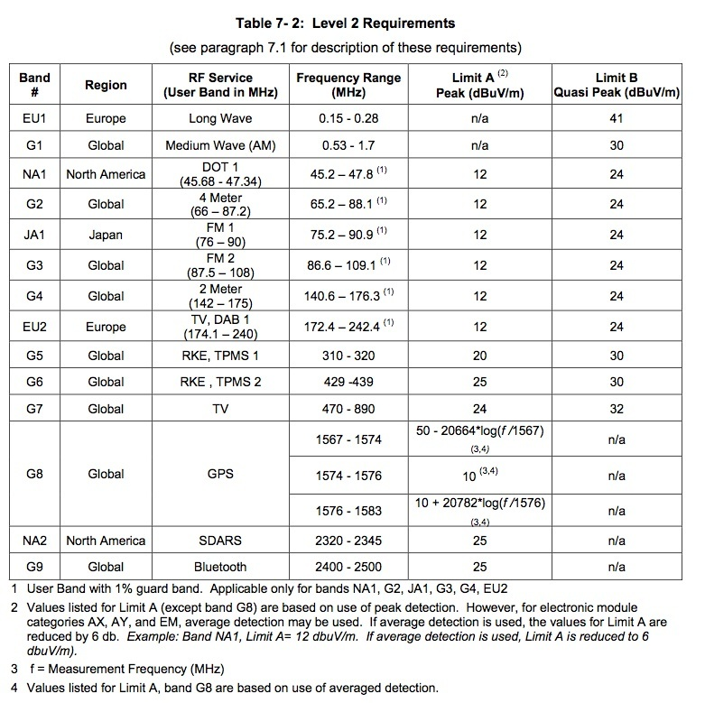

Last Modified: November 8, 2011
Contents: Basics; More To It; Think Ahead; Conclusion;
This article is entwined with my Digital Electronics article. Therefore, it is suggested that it too be read by persons interested in potential warranty issues. You should also read the caveats section in the wiring article.
Considering today's litigation climate, it is not uncommon for automobile dealership personnel to tell potential buyers that installing two-way radio equipment into their vehicles will void their warranty. Nothing could be further from the truth! Think about this; virtually every single model of vehicle every made in the last 60 years or so, has had a police, fire, or rescue radio installed in it. To accommodate those users, most manufacturers publish documents pertaining to two-way radio installation. Here are the wiring guides Ford and GM, and the ARRL web site has them listed for most other makes located here.
Obviously, there is much more to it than just following a manufacturer's recommendations with respect to wiring, which the aforementioned documents refer to; the various articles on this web site are a testament to that fact.
There is so much misinformation floating on the Internet these days, with respect to warranty coverage when amateur radio gear is installed in vehicles. The vast majority of the information is based on anecdotal and quasi-technical palaver. Most of the information is aimed at the various on-board computerized control equipment in modern vehicles. The common thread seems to be the damage which can (will) be caused to these computers when subjected to high level of RF generated by amateur radio. This is a blatant misrepresentation of the real facts!
 Manufacturers go to great length to test all of their electronics, whether they make them, or purchase them. The included charts are from Ford Motor Company (click for enlarged views). The complete documentation can be read here Electromagnetic Compatibility. They represent the minimum testing level. In other words, the various on-board devices must pass muster when subjected to the RF level so listed.
Manufacturers go to great length to test all of their electronics, whether they make them, or purchase them. The included charts are from Ford Motor Company (click for enlarged views). The complete documentation can be read here Electromagnetic Compatibility. They represent the minimum testing level. In other words, the various on-board devices must pass muster when subjected to the RF level so listed.
Note the frequency range; .15 MHz, to 2,500 MHz! The Level 1 Requirements chart is dated 2003, but has been updated several times. The latest version extends this to 3,100 MHz to cover the new cellular bands. The revised chart is at right. Take note of the RF levels shown in the chart.

Probably the worse offender in improper wiring. Ford, among others, publish specific wiring recommendations covering any type of installed radio gear, amateur or otherwise. Note their general outlines below. These are the exact recommendations stressed throughout this web site.
1). Power connections should be made directly to the battery and/or jump points, and fused as close to the connection as possible. Do not use cigar lighter or “Power Point” receptacles as power sources for any radio communication equipment.
2). Antennas for two-way radios should be mounted on the roof or the rear area of the vehicle. Care should be used in mounting antennas with magnet bases, since magnets may affect the accuracy or operation of the compass on vehicles, if so equipped.
3). The antenna cable should be high quality, fully shielded coaxial cable, and kept as short as practical. Avoid routing the antenna cable in parallel with vehicle wiring over long distances. This is especially important due to common mode concerns.
4). Carefully match the antenna and cable to the radio to achieve a low Standing Wave Ratio (SWR). And, carefully mount antennas to avoid RF currents on the antenna cable shield (I.E.: common mode current).
 Note in 1). the comment about power point receptacles is very poignant. I'll add this; even if you're using the MFJ device that is supposed to allow such use! If you are using one of these, you're running a very great risk of an electrical fire, which is without doubt, the costliest of vehicle repairs. Click of the left photo for a reality check. The arrow is pointing to what is left of a power point plug, and its attached wiring.
Note in 1). the comment about power point receptacles is very poignant. I'll add this; even if you're using the MFJ device that is supposed to allow such use! If you are using one of these, you're running a very great risk of an electrical fire, which is without doubt, the costliest of vehicle repairs. Click of the left photo for a reality check. The arrow is pointing to what is left of a power point plug, and its attached wiring.
Note in 2). the comment about mag mounts is also poignant. They can, and do, cause erratic operation of Navi equipment as well.
Note in 3). about keeping coax runs short, and away from internal wiring. The latter is for those who don't properly install their antennas, and end up with excessive common mode currents. Control common mode, and it doesn't make any difference where the wiring is routed.
Note in 4). about properly matched, and properly mounted antennas. Again, this is a common mode issue!
There is one more common problem which should be noted, and that is ground loops. Mag mount antennas, and using the chassis for DC ground returns is a sure-fire way to create a ground loop. Ground loops are the hardest of maladies to find, and cure because they mask themselves as RFI ingress. It is simple to avoid them with proper wiring and mounting.
 Just because you have never experienced a problem using a mag mount antenna, doesn't mean you're not having any. It just means you haven't discovered any ramifications. If you've read the Digital Electronics article, you'd know that it is indeed possible to cause error codes to be written to the OBDII-EOBD memory. Whether or not these codes illuminate the MIL is moot!
Just because you have never experienced a problem using a mag mount antenna, doesn't mean you're not having any. It just means you haven't discovered any ramifications. If you've read the Digital Electronics article, you'd know that it is indeed possible to cause error codes to be written to the OBDII-EOBD memory. Whether or not these codes illuminate the MIL is moot!
 Part of the issue are the vast-number of digital electronic devices on-board modern vehicles. Adding a little insult are the data buses interconnecting them. Along with OBDII EDC, the chances of RFI issues, ingress and egress, are multiplied by several magnitudes. This said, the vast majority of the time, it is the on-board electronics interfering with you (egress), and not the other way around (ingress). That's not to say ingress doesn't happen, because it does. However, if you follow the suggestions contained in these pages, your problems will be greatly diminished, if not abated entirely.
Part of the issue are the vast-number of digital electronic devices on-board modern vehicles. Adding a little insult are the data buses interconnecting them. Along with OBDII EDC, the chances of RFI issues, ingress and egress, are multiplied by several magnitudes. This said, the vast majority of the time, it is the on-board electronics interfering with you (egress), and not the other way around (ingress). That's not to say ingress doesn't happen, because it does. However, if you follow the suggestions contained in these pages, your problems will be greatly diminished, if not abated entirely.
Here's another scenario to think about. Hurried, sloppy, and incomplete installations are more problematic than those which are well thought out, and executed properly. While this seems like a no-brainer, you should see some of the photos send to me for inclusion in my Photo Gallery. Some of them are shown in the HOS album.
The vehicle style and type is usually dictated by the size of the family, the number of vehicles owned, and to some extend the use for the vehicle. It is a rare purchase indeed, when the installation of amateur radio gear is included in the buying plans. When it is, the first order of business should be the proposed location of the antenna, the location and methodology of the radio mounting, and the necessary accessory load (large alternators etc.) to support it, keeping safe operation in the forefront all the while.
Sharp-eyed readers will notice I used the word purchase in the last paragraph. However, I do realize some folks do lease vehicles, albeit one of the most expensive ways to drive a new vehicle every few years. For some reason they use the fact the vehicle is leased as an excuse for not properly installing radios and antennas. The usual comment is, my lease agreement says I can't drill holes. Just for the record, I have never seen a lease document which expressed those words, or even the essence of those words. If that were the case, you wouldn't see any commercially-leased vehicles. The truth is, what dealers look for when lease vehicles are turned in, isn't an NMO mount stuck in the roof. They look at the overall cleanliness, any excess mileage over the lease's agreed upon limit, and any obvious dings and scratches, including those caused by mag mounts!
Resorting to mag mounts and similar attachment methods will actually increase your chances of both ingress and egress RFI. They're also a major source of ground loop problems, and consider this. Road debris is literally all over the place, but it isn't the big pieces you can see, it is the ones you can't. A good example is brake dust from the now ubiquitous metallic brake pads. In case you hadn't thought of it, this debris is magnetic. It collects on, and eventually gets under mag mounts. You can always tell where a mag mount antenna was stuck, as the paint has a slight milky color to it. If it isn't severe, it can be polished out, but I've seen some where the paint was down to the primer. If that wasn't enough, they tend to mar the finish is what is often referred to as mooning. These crescent shaped arcs are clearly visible after a few months of mag mount use. Removing them requires a repaint, so ask yourself who is going to pay that bill?
The point of all of this is, warranty issues are the least of your worries with respect to amateur radio in modern, computerized vehicles. Or at least should be.
I'm not a lawyer, so I don't profess to know all the angles, but I will say this. If you're ever denied a warranty claim on your vehicle (regardless of what it might be), when you've followed the manufacturer's wiring and installation recommendations, and the reason stated was that you had amateur radios on board, find yourself a good lawyer! Just remember, keep very good records of any correspondence between you, and your dealer, in writing!
{kind=link}